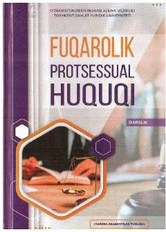

FPFuqarolik protsessual huquqining umumiy qismiga bag'ishlangan Oliy ta'lim darsligi.
Mazkur darslik yurisprudensiya yo'nalishi talabalari uchun mo'ljallangan bo'lib, fuqarolik protsessual huquqining umumiy qoidalari, prinsiplari, taalluqliligi va sudlovligi kabi masalalarni qamrab oladi. Kitobda protsess ishtirokchilarining huquqiy maqomi, da'vo instituti, isbotlash va dalillar, sud xarajatlari hamda sud qarorlari amaliyot materiallari asosida batafsil sharhlangan.